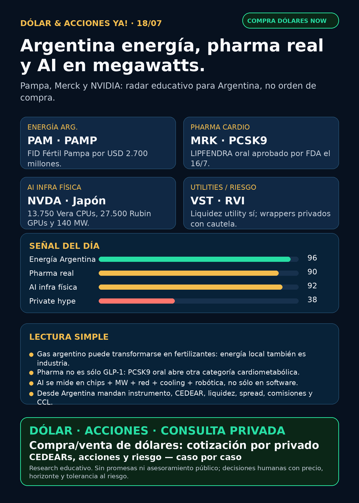

Argentina energía, pharma real y AI medida en megawatts.
Pampa aprobó Fértil Pampa por USD 2.700 millones; Merck logró FDA para un PCSK9 oral; NVIDIA/Japón confirma que AI infra también es 140 MW físicos.
Texto WhatsApp
Placa del día

Dólar & Acciones YA — 18/07
Fecha de edición: 2026-07-18. Research educativo para Argentina. No es recomendación personalizada de compra o venta.
Lectura simple del día
La lectura de hoy es bien concreta: el mundo AI no se mueve sólo por software ni por el ticker de moda. Se mueve por energía física, chips, megawatts, gas industrializado, pharma regulada y vehículos financieros que a veces parecen acceso directo pero no lo son.
En criollo: para que una tesis sirva, hay que separar cuatro cosas distintas: buena empresa, buen precio, buen instrumento para Argentina y buen tamaño dentro de una cartera. Desde Argentina además importan CEDEAR, liquidez, spread, comisiones y CCL/MEP.
Contexto dólar público usado sólo como referencia educativa: BlueLytics marcó oficial vendedor ARS 1.502 y blue vendedor ARS 1.530 al 2026-07-17 19:45 -03. CriptoYa marcó MEP AL30 ARS 1.520,43 y CCL AL30 ARS 1.565,73 al 2026-07-17 16:59 -03; USDT ask ARS 1.578 al 2026-07-18 02:13 -03. Para operar de verdad se confirma en broker vivo.
Ordenado por valor educativo y fuerza de señal de radar, no por recomendación de compra.
Tesis central
La señal central es que Argentina energía vuelve al centro. Pampa aprobó la decisión final de inversión de Fértil Pampa: usar gas argentino para producir urea/amoniaco con un proyecto de aproximadamente USD 2.700 millones. Eso compite con la narrativa global de AI power: no todo el valor está en Silicon Valley; también puede estar en Vaca Muerta, fertilizantes, gas-to-products y ejecución industrial local.
Al mismo tiempo, Merck metió un catalizador pharma real con un PCSK9 oral aprobado por FDA; y NVIDIA mostró que la infraestructura AI nacional se empieza a medir en megawatts, CPUs, GPUs, robótica y soberanía industrial.
Señales educativas del día
1) Energía Argentina / gas-to-products — Pampa Energía (`PAM` / `PAMP`)
- **Qué pasó:** Pampa informó la FID de Fértil Pampa y garantías del EPC contract.
- **Dato clave:** complejo para **6.000 toneladas/día de urea granulada**, equivalente a **2.100.000 toneladas/año**, con inversión aproximada de **USD 2.700 millones**. Obra estimada: **41 meses**. EPC turnkey con Tecnimont SPA y SACDE S.A. RIGI/REPIE son aprobaciones esenciales.
- **Fuente primaria:** SEC 6-K exhibit: https://www.sec.gov/Archives/edgar/data/1469395/000129281426003804/ex99-1.htm
- **Lectura en criollo:** esto no es “una energética más”. Es convertir gas argentino en producto industrial, fertilizante, exportación o sustitución de importaciones. Energía local puede ser tesis propia.
- **Accionable Argentina:** potencialmente más cercano que Corea/OTC porque existe PAMP local y PAM ADR, pero antes de hablar de ejecución hay que revisar precio, liquidez, spread, riesgo regulatorio, RIGI/REPIE y exposición previa.
- **Estado:** señal fortalecida / en radar.
2) Pharma cardiovascular — Merck (`MRK`) LIPFENDRA / enlicitide
- **Qué pasó:** Merck anunció aprobación FDA de **LIPFENDRA® (enlicitide) tablets 20 mg** para reducir LDL-C en adultos con hipercolesterolemia, incluyendo HeFH.
- **Dato clave:** Merck lo presenta como el **primer PCSK9 oral aprobado por FDA**. CORALreef Lipids redujo LDL-C **56% vs placebo** a semana 24; CORALreef HeFH redujo **59% vs placebo**. openFDA confirmó NDA220848, producto ENLICITIDE, ORIG 1, estado aprobado, fecha **2026-07-16**.
- **Fuente primaria/company:** https://www.merck.com/news/mercks-lipfendra-enlicitide-is-the-first-and-only-once-daily-oral-pcsk9-inhibitor-approved-by-the-u-s-fda-to-reduce-ldl-c-in-adults-with-hypercholesterolemia/
- **Fuente FDA:** https://www.accessdata.fda.gov/drugsatfda_docs/appletter/2026/220848Orig1s000ltr.pdf
- **Lectura en criollo:** no todo metabolismo es Ozempic o GLP-1. Colesterol/PCSK9 es otra categoría enorme; pasar de inyección a pastilla puede cambiar adherencia, competencia y pricing.
- **Riesgo:** Merck aclara que todavía no está probado si reduce morbi-mortalidad cardiovascular. Es catalizador regulatorio, no garantía comercial.
- **Accionable Argentina:** MRK global/CEDEAR a verificar; no convertir una aprobación en orden de compra.
- **Estado:** señal fortalecida / en radar.
3) AI infrastructure / physical AI — NVIDIA (`NVDA`) + Japón / Noetra
- **Qué pasó:** NVIDIA anunció junto a Japón/Noetra una AI factory nacional Vera Rubin para el FRONTia Project.
- **Dato clave:** **13.750 NVIDIA Vera CPUs + 27.500 Rubin GPUs**, arquitectura Vera Rubin NVL72/DSX, Spectrum-X, BlueField y **140 MW** de capacidad de data center. Objetivo: modelos multimodales, agentes, digital twins, robótica y physical AI.
- **Fuente primaria:** NVIDIA Newsroom: https://nvidianews.nvidia.com/news/japan-government-industrial-leaders-and-nvidia-launch-the-worlds-first-national-ai-infrastructure
- **Lectura en criollo:** AI ya se mide también en megawatts, países, robots, data centers, cooling y red eléctrica. NVIDIA vende stack, no sólo placa de video.
- **Accionable Argentina:** NVDA tiene vía global y normalmente CEDEAR/acceso local, pero precio, concentración, liquidez, spread y CCL se chequean antes de cualquier decisión humana.
- **Estado:** señal fortalecida / vigilar ejecución Rubin/DSX.
4) Utilities / AI power liquidity — Vistra (`VST`)
- **Qué pasó:** Vistra modificó su accounts receivable securitization facility.
- **Dato clave:** compromiso agregado sube de **USD 1.100 millones a USD 1.250 millones** y el término se extiende hasta **2027-07-09**; también extendió facility con MUFG.
- **Fuente primaria:** SEC 8-K: https://www.sec.gov/Archives/edgar/data/1692819/000114036126028619/ef20077984_8k.htm
- **Lectura en criollo:** mejora flexibilidad financiera, pero **no** es un contrato nuevo con data centers. En utilities hay que distinguir liquidez/deuda de crecimiento real.
- **Accionable Argentina:** proxy global; acceso local a verificar.
- **Estado:** vigilar / fortalece liquidez, no headline de crecimiento.
5) Energía Argentina / seguimiento — Vista (`VIST`) y Central Puerto (`CEPU`)
- **Vista:** mantiene señal fuerte previa: producción **156.061 boe/d**, revenue **USD 1.154 millones**, adjusted EBITDA **USD 805,2 millones**. Fuente SEC presentación Q2: https://www.sec.gov/Archives/edgar/data/1762506/000119312526306731/d101768dex1.htm
- **Central Puerto:** publicará Q2 2026 el **2026-08-11** y conference call el **2026-08-12**. Fuente SEC 6-K: https://www.sec.gov/Archives/edgar/data/1717161/000129281426003802/cepu20260717_6k.htm
- **Lectura:** VIST sigue señal ya fortalecida; CEPU es calendario a vigilar, todavía no catalyst operativo.
Watchlist base — seguimiento rápido
- RKLB: sin SEC nuevo material post-Iridium. RSS trae precio/analistas; no elevar sin filing o fuente primaria.
- NVDA: señal fuerte por Japón/Noetra/140 MW Rubin AI factory.
- PLTR: Form 4 de Alexander D. Moore con venta 10b5-1 de **16.000 acciones**, proceeds aprox. **USD 2,145 millones**, VWAP **USD 134,05**. No es señal operativa; vigilar valuación/insider selling.
- TSM: sin novedad nueva desde Q2/guidance 16/7. Moat foundry sigue fuerte, pero no repetir como noticia fresca.
- MU: Form 4 de officer; HBM/memory sigue en radar, sin headline operativo hoy.
- GOOGL/GOOG: sin filing operativo nuevo; Steel River sigue vigente como AI power signal previa.
- AAPL / AVGO: acuerdo custom ASIC Apple-Broadcom hasta 2031 sigue vigente de días previos; sin novedad primaria nueva.
- HOOD: CFO vendió **3.982 acciones** vía 10b5-1 por aprox. **USD 456.800**, VWAP **USD 114,71**. No cambia tesis.
- TSLA: robotaxi/NHTSA quedó audit-only por falta de fuente primaria usable.
- ASML: sin novedad nueva más allá de Q2 del 15/7; radar alto por High-NA/AI bottleneck, no headline repetido.
- Gold / GLD / GOLD / B: instrumento ambiguo; bloqueado hasta confirmar si hablamos de ETF, minera, oro físico u otra cosa.
- RVI: sponsor sales por Form 4; wrapper, no operating company.
- SNDK / CBRS: sin SEC nuevo fresco. CBRS sigue radar alto por OpenAI/AWS/customer concentration, pero no se repiten secundarios.
Energía y AI power
- **Argentina:** PAM/PAMP fue la señal principal por Fértil Pampa. VIST sigue fuerte por resultados; CEPU dejó calendario; YPF, TGS, CEPU, PAMP revisados sin otro filing operativo superior.
- **Fertilizantes / gas-to-products:** la idea educativa es que gas argentino puede convertirse en industria pesada, no sólo vender molécula o electricidad.
- **AI power global:** NVIDIA Japón agrega demanda física de **140 MW**; Google Steel River sigue como señal estructural previa de hyperscaler energy/storage.
- **Transformadores / power hardware:** Hitachi Energy, Siemens Energy (ENR.DE), GE Vernova (GEV), HD Hyundai Electric, Hyosung/HICO, Virginia Transformer y Delta Star revisados. Hubo RSS útil sobre Siemens Energy/grid equipment, pero sin primaria fuerte fresca verificada esta noche. Mantener lane obligatorio; no vender Corea/OTC como fácil para Argentina.
Pharma / salud
- MRK: LIPFENDRA/enlicitide es la señal nueva principal. FDA + company primary verificados. Cardiometabólico serio, no GLP-1.
- NVO: Wegovy oral Europa sigue vigente de corrida anterior; no fue novedad FDA nueva de hoy.
- LLY: orforglipron/Foundayo no tuvo catalyst fresco verificado; mantener alerta contra titulares reciclados.
- PFE/MRK oncology y AZN: señales previas siguen vigentes, sin nueva primaria superior esta noche.
- Celcuity: RSS/Reuters apareció pero sin primaria usable; no elevar.
Radar amplio fuera de watchlist
- **Defensa / guerra física:** GE sigue fuerte por Q2/backlog/defensa verificado ayer. AVAV tuvo ventas chicas de insiders y el contrato counter-UAS de USD 500 millones sigue pendiente de primaria DoD/AVAV para headline fuerte. RTX, LMT, NOC, GD, HWM, KTOS, BA, ITA/XAR revisados sin señal primaria nueva superior.
- **Physical AI / robotics:** NVIDIA Japón/FRONTia es señal educativa fuerte para robótica industrial, digital twins y soberanía AI.
- **Autonomous mobility:** TSLA/robotaxi/NHTSA queda audit-only. No repetir RSS como verdad.
- **Crypto gobernado / rails:** sin señal nueva mejor que Robinhood Chain/Stock Tokens/Agentic Accounts ya indexado. No hay token trade.
- **Commodities/oro:** sin instrumento exacto; mantener Gold/GLD/GOLD/B bloqueado.
Private markets / instrumentos empaquetados
- **RVI / Robinhood Ventures Fund I:** Form 4 verificado: Robinhood Markets vendió **19.776 acciones** el 14–15/7 por aprox. **USD 563.500**, VWAP **USD 28,49**. Sigue siendo señal de liquidez/float/sponsor sales, no oportunidad. Falta NAV, holdings, premium/descuento, volumen, spread y acceso Argentina/USA.
- **DXYZ / Destiny Tech100:** RSS vuelve a venderlo como acceso a SpaceX/OpenAI; sin filing fresco verificado ni NAV/premium actual. Radar educativo, no headline.
- **SPCX / SpaceX:** RSS de Reuters/CNBC sobre lockup/selloff/short sellers quedó sin fuente final usable y sin SEC nuevo. Estado: auditoría, no claim público.
- **ARKVX / AGIX / XOVR / VCX / FAPMI / Forge:** sin evidencia fresca verificable.
- **CBRS / Cerebras:** sin SEC nuevo; mantener radar alto por OpenAI/AWS/customer concentration, no repetir artículos secundarios.
Capa Argentina — cómo leer esto desde acá
- **CEDEAR:** no es la acción original. Tiene ratio, liquidez local, spread, comisiones y CCL implícito.
- **MEP/CCL:** si el activo está dolarizado, el tipo de cambio implícito puede mover tu resultado aunque el ticker afuera no cambie.
- **Buena empresa ≠ buen precio:** Pampa, Merck o NVIDIA pueden tener señales reales y aun así requerir precio de entrada, horizonte, riesgo y tamaño.
- **Proxy imperfecto:** energética argentina, utility USA, pharma global y hyperscaler no son lo mismo. Comparten tema, no riesgo ni flujo de caja.
- **Cuenta USA/global:** puede simplificar ticker y liquidez, pero suma fiscalidad/compliance y riesgo de mercado.
Red flags / hype para ignorar hoy
- “Todo filing utility es contrato AI”: no. Vistra hoy fue financiamiento/liquidez, no contrato de data center.
- “RVI/DXYZ/VCX son SpaceX/OpenAI directo”: no sin NAV, holdings, premium, volumen y restricciones.
- “FDA aprobó algo = comprar pharma”: no. Hay que mirar outcomes, mercado, pricing, competencia y precio del activo.
- “Robotaxi/FSD resuelto”: no sin fuente regulatoria primaria.
- “Gold/GLD/GOLD/B”: bloqueado hasta confirmar instrumento exacto.
Qué mirar después
1. Pampa/Fértil Pampa: RIGI/REPIE, EPC, deuda/capex, plazos, riesgo político y precio de gas.
2. Merck/LIPFENDRA: label final, cobertura, pricing, CV outcomes y reacción competitiva de PCSK9 inyectables.
3. NVIDIA/Japón: ejecución Rubin/DSX, demanda de energía, cooling, red y throughput por MW.
4. Vistra/AI power: contratos reales, capacity markets, deuda y margen; no confundir liquidez con crecimiento.
5. Argentina: CEDEAR/acceso local, spread, CCL y liquidez antes de cualquier análisis operativo.
Recibo de cobertura
Watchlist base revisada; energéticas argentinas revisadas; transformadores/power hardware revisado; pharma/GLP-1 revisado; defensa/aeroespacial revisado; space/private wrappers revisado; autonomía/physical AI revisado; crypto gobernado revisado. Sin audio/TTS por política text-only vigente.
Servicio privado
Dólar · Acciones · Consulta privada. Si querés comprar o vender dólares, entender CEDEARs, armar una cartera o revisar riesgo, se ve por privado caso por caso. Cotización de dólares sujeta a confirmación al momento de operar.
Disclaimer
Esto es research educativo para decisión humana. No es asesoramiento financiero personalizado ni recomendación de compra/venta.